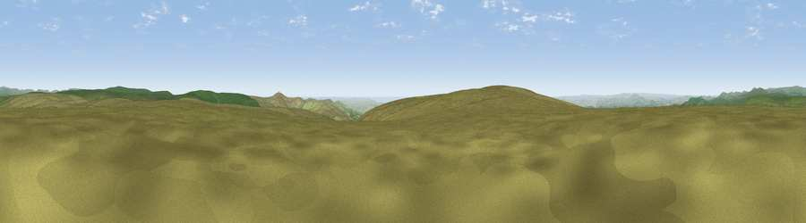

Viewpoint near Lee Moor
#10391 in England · top 20% of its area beats it · near Lee MoorWhere it is
The exact computed spot (SX 61125 65475). Click the marker for map links.
The view, rendered

A 360° render of this exact spot computed from the terrain model, tree cover and land cover — summer colours, afternoon light, calibrated against photographs of famous viewpoints. Real trees, hedges and buildings will differ in detail.
The panorama
Grey silhouette: terrain skyline in each direction (720 bearings, Earth curvature and refraction included). Dashed green: skyline with trees (+15 m) and buildings (+8 m) as obstacles. Blue strip: how far the ground is visible on each bearing.
Where the view opens
Wedge length = distance to the farthest visible ground on that bearing (vegetation-aware). Rings at 10, 25 and 50 km.
What fills the view
93% grassland · 3% cropland · 2% woodland · 2% water
Angular shares of the visible panorama (visual magnitude), not map area. Landscape diversity 0.15 (0–1 Shannon).
Key numbers
More beautiful places nearby
The staircase of upgrades: each row has a higher view potential than everything closer. Driving times are estimates from straight-line distance, calibrated against real road routing — check an actual route before setting out.
| Place | Direction | Drive | Score |
|---|---|---|---|
| Viewpoint near Lee Moor | SW · 0 km | ~2 min | 64.9 |
| Viewpoint near Lee Moor | SW · 1 km | ~4 min | 75.2 |
| Shell Top | SW · 2 km | ~6 min | 81.8 |
| Viewpoint near Lee Moor | WSW · 6 km | ~13 min | 82.7 |
| Viewpoint near Hope | SSE · 28 km | ~44 min | 84.4 |
| Viewpoint near East Prawle | SSE · 33 km | ~51 min | 84.6 |
| Pencarrow Head | WSW · 48 km | ~69 min | 86.0 |
| Viewpoint near Lesnewth | WNW · 56 km | ~78 min | 87.7 |
50.47260, -3.95840 · source: screening · position refined by local search. Computed location — check access rights before visiting.